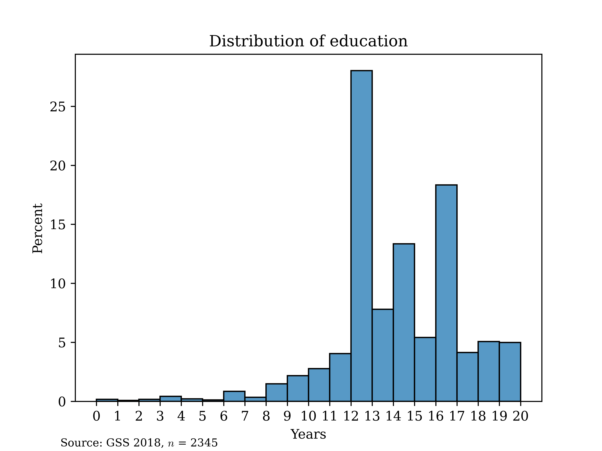
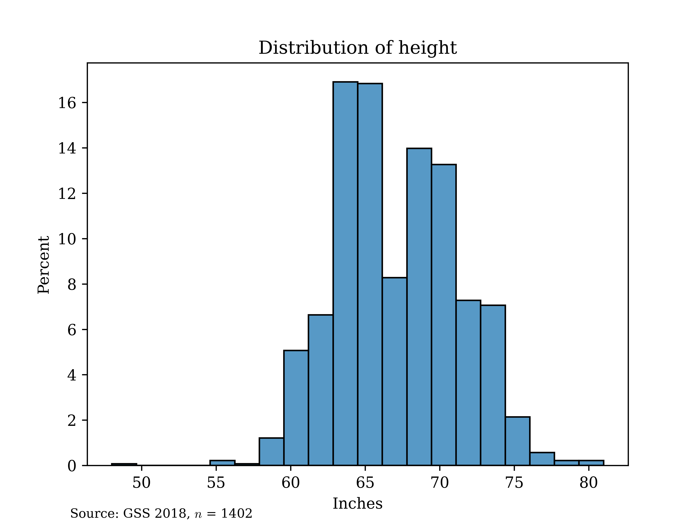

Some basic operators#
The summation operator tells us to sum from the observation denoted at the bottom of the capital greek letter \(\Sigma\) (“sigma”, which makes the “s” sound, as in sum) and go up until the observation denoted on top of the \(\Sigma\). For us, the bottom item will almost always be individual (denoted i) equal to one, going up until individual equal to n, where n is the sample size. Please note carefully that we’re using small Latin letters here in two different ways: i is an index, which varies across individuals; n is a constant and a property of the data-set as a whole. Examine this simple example data-set:
\[\begin{split} \begin{array}{|c|c|} \hline \textbf{i} & \textbf{y} \\ \hline \text{1} & \text{3} \\ \hline \text{2} & \text{10} \\ \hline \text{3} & \text{2} \\ \hline \text{4} & \text{4.5} \\ \hline \end{array} \end{split}\]Now, try to carry out the arithmetic operation indicated by the following notation: \(\sum_{i=1}^n y_i\).[1]
The numbering of individuals is, for our purposes, basically always arbitrary, and summation is commutative anyways (the order of the items summed, or the summands, does not matter), so sometimes you will see the sub- and superscripts omitted.
Let’s suppose that we are interested in someone’s highest year of education achieved and we have observations on n = 10 individuals. Let their scores on the education variable be represented by the vector \(\vec{y} = [10, 12, 16, 12, 18, 10, 20, 18, 9, 10]^t\). All that the little “t” represents here is that this is the transpose of the actual vector, which would be a column in the standard way of representing data in matrices (rows are individuals, columns are variables). As you can see above, it would waste a lot of space to represent column vectors the correct way in text documents, you will see this convention very often. The idea is that we are making clear that this is a list of different individuals and not the scores for one individual on ten different variables (if we wanted to represent such a row vector, we’d just omit the “t”).
Now, try to sum up these individuals’ scores. The order here is arbitrary, but you might as well conceptualize those scores above as being a specific case of the following vector: \(\vec{y} = [y_1, y_2, ... y_n]^t\). The last piece of notation is that we we will represent random variables in their most abstract form with capital Roman letters; their sample equivalents have lowercase Roman letters. Unlike in most statistics books, I will consistently use Greek letters without hats to denote true population parameters (most books usually, but not always, do this) and Greek letters with carets or “hats”. Greek letters will be used in the conventional way: the sound they make indicates the parameter. Here, \(\tau\) (“tau”) stands in for the total. Note that the notation means that to find the sample estimate of the total of the random variable Y, we sum up the observed values in the sample, \(y_i\). Note that to estimate the value of the total, we need to multiply by the probability of selection into the sample. If each observation has a different probability, we need to put this inside of the summation. In our case, we’ll deal only with the equal probability of selection (epsem) method, so this is a constant that can be factored out.
\[\begin{align*} \widehat{\tau}_Y &= \pi \sum_{i=1}^n y_i \end{align*}\]The mean is a measure of central tendency—something like the “characteristic value of a distribution”, which the mean, median and mode all get at. “Mean” is simply the formal term for the arithmetic average. We’ll focus on the simple case where possible outcomes are discrete, meaning that they are finite in number or countably infinite; most real-world data-sets involve discrete outcomes (but sometimes it is theoretically important to consider infinite outcomes; more on this later).
For example, if we record someone’s income to the cent, while they could in theory tell us that they have any number up to infinity, this is countably infinite; setting aside the formal definition, this means basically that we’ll never need to use a number whose distance to another number in the set of outcomes is <0.01.
The mean is sometimes referred to as the expected value or expectation. When we write the mean as an expected value or expectation, we conceptualize it as a population level property; it is the weighted sum of all possible values of the variable. So, we are summing over the possible outcomes of the variable when we write the mean as an expectation—we are not summing over any observed individuals. Many textbooks and internet sources do not change their notation here, which confuses new students, so I will now re-index the sum. Let o index an outcome of the random variable Y (i.e., “o=5” would mean the fifth possible outcome, where order again typically does not matter) and let O indicate the number of possible outcomes. Then, for a discrete random variable:
\[\begin{align*} \mathbb{E}[Y] &= \sum_{o=1}^O y_o * \mathbb{P}(Y=y_o) \end{align*}\]This says that we look at each possible outcome o, starting with o = 1, and multiple the value of that outcome \(y_o\) by its probability of occurring, \(\mathbb{P}(Y=y_o)\).
The exception for our notation is that I will consistently use \(\widehat{\mu}_Y\) to indicate the sample estimate of the population mean. Most textbooks use the notation \(\bar{y}\). The problem with this notation is that it breaks the general rule about Greek and Roman letters mentioned above and requires you to memorize a new relationship. Just remember that \(\widehat{\mu}_Y\) and \(\bar{y}\) both indicate the sample estimate of the mean (my notation here is increasingly common in data science and machine learning contexts, e.g. Shalizi 2020, but it is still uncommon in social science).
The variance is a measure of spread or dispersion. You can think about it as the expected difference between a randomly-selected observation and the mean. We define it formally as the expectation of the difference between the random variable Y and its mean \(\mu_Y: \mathbb{V}[Y] = \mathbb{E}[(Y - \mu)^2]\). You may wonder why we square the difference. There is a very good reason for this that leads us to the proof of a useful fact about the mean, which is that it is the value for a given set about which all deviations are not just minimized but also zero!
\[\begin{align*} &1. \mathbb{E}[Y - \mu_Y] = \mathbb{E}[Y] - \mathbb{E}[\mu_Y] && \text{expectation operator is linear} \cr &2. \mathbb{E}[Y] = \mu_Y && \text{by definition} \cr &3. \mathbb{E}[\mu_Y] = \mu_Y && \text{expectation of a constant is just that constant} \cr &4. \mathbb{E}[Y - \mu_Y] = \mu_Y - \mu_Y = 0 && \text{arithmetic} \end{align*}\]An extremely useful trick is to rewrite the variance as follows:
\[\begin{align*} &1. \mathbb{V}[Y] = \mathbb{E}[(Y - \mu_Y)^2] && \text{definition} \cr &2. = \mathbb{E}[Y^2 - 2*\mu_Y*Y + \mu_Y^2] && \text{binomial expansion AKA "FOILing"} \cr &3. = \mathbb{E}[Y^2] - \mathbb{E}[2*\mu_Y*Y] + \mathbb{E}[\mu_Y^2] && \text{expectation operator is linear} \cr &4. = \mathbb{E}[Y^2] - 2*\mu_Y*\mathbb{E}[Y] + \mathbb{E}[\mu_Y^2] && \text{constants can be factored out} \cr &5. = \mathbb{E}[Y^2] - 2*\mu_Y*\mu_Y + \mathbb{E}[\mu_Y^2] && \text{definition of expectation} \cr &6. = \mathbb{E}[Y^2] - 2*\mu_Y^2 + \mu_Y^2 && \text{expectation of a constant is just that constant, definition of square} \cr &7. = \mathbb{E}[Y^2] - \mu_Y^2 && \text{arithmetic} \cr &8. \mathbb{V}[Y] = \mathbb{E}[Y^2] - \mathbb{E}[Y]^2 && \text{definition of expectation} \cr \end{align*}\]It is useful to think about the variance operator, \(\mathbb{V}\) as a function that produces the variance, and the actual variance itself as a fixed quantity for a given population. We will denote this \(\sigma^2\). Do not let yourself get frustrated by the power of 2. The reason we do this is quite simple: the variance is easier to calculate with, but the interpretation—the expected squared distance of a point from the mean, or the average squared distance of a point from the mean—is more difficult. One solution is to just take the root of the whole thing, which we then call the standard deviation. Finally, we denote this
Bivariate analysis: tests for a difference in means#
Suppose that we are interested in determining whether two groups differ on some key outcome variable, such as their level of education or income. Let’s be clear and formalistic about what we are after: we want to know whether or not, say, \(\mu_{income | white} = \mu_{income | black}\) or \(\mu_{education | male} = \mu_{education | female}\), where, to avoid the confusion caused by double subscripts, I’ve used the standard notation of a vertical bar to indicate “given that one is…”.
An obvious move here is just to replace these with their sample equivalents. So, using the older (if more confusing) notation for a sample mean, we might check whether \(\overline{educ}_{male} = \overline{educ}_{female}\). And, in fact, this is exactly the right idea. The question now, however, is whether or not this difference is liable to have arisen by chance.
You should stop and really consider this for a moment because this is the entire idea behind inferential statistics, as opposed to simply descriptive statistics (recall: descriptive statistics are just ways of summarizing the data we have, whether these are population-level or sample-level, without reference to whether these represent some other group). Why can’t I trust, say, an observed difference of a year between a group of men and women?
One intuitive reason not to trust this, and this is what you’ll almost always hear in internet arguments about this sort of thing from people who are a little learnèd (if not too learnèd), is that the sample size might be too small. It turns out that this is a little too conservative: we need to adjust for small sample sizes, but if we have a truly random sample, any data are better than no data, and we can just adjust for the small sample size.
Another reason not to trust this is that we don’t have access to the whole population. This is really just the same objection as above: the sample size is too small. But, there’s a subtle difference here: in this case, the gripe cuts to the heart of the matter. We don’t just have a “small” sample size, whatever that might mean. We have a sample, period: some group of people smaller than the population we care about. And samples are noisy processes; that’s what makes them great, in fact—they differ from the population only by random error (“noise”). But, we do need to take account of the error. So, how do we do that?
Let’s actually start with an easier, if slightly less-interesting, question: how would we do this for just one group’s mean? It turns out that to calculate the sampling noise, we need a little bit of theory.
The Central Limit Theorem (CLT)#
To make a judgment call about whether or not a sample mean \(\overline{Y}\) represents a population mean \(\mu_Y\), we need to have some sense for how the sample mean behaves across many samples. In other words, we need to know the probability distribution (technically: the probability density function, or PDF) of sample means.
Histograms and probability distributions#
I will presume here that you are at least loosely familiar generally with histograms, from which we’ll build an intuition for the Normal PDF; in the class for which these notes are being prepared, I’ll have slides that walk you through how those work. Histograms are basically sample approximations of PDFs. On the X-axis, we have the possible-outcomes[2] for a variable; on the Y-axis, we have some kind of indication of the frequency of observations. So, any individual bar tells us the frequency of observations taking on a certain possible-value. For example, in the histogram for education below, about five percent of observations took on the value 11, meaning that five percent of the sample had 11 years of education.

PDFs are just the equivalent of a histogram when 1) we know about the true population distribution and 2) we have a continuous random variable. Recall that all actual sample data are discrete: we stop measuring the digits at a certain point (e.g., we measure height only to the tenth of an inch in some data-sets). But, in principle, height could be measured infinitely more-precisely with better and better microscopes, so it is a continuous random variable. But, it is rare to really know the PDF of a real-world variable; height happens to be approximately Normal, which is why I picked it as an example, but this is still only an approximation.

However, it turns out, quite impressively, that sample means are Normally-distributed across many samples: this is the Central Limit Theorem (CLT). In other words, if you had a population from which you could take an infinite number of samples (with replacement), the histogram of sample means would basically be indistinguishable from a smooth, Normal curve. We’ll learn two useful techniques that use this fact in due time.
If the population is sufficiently large relative to the the size of the sample, each individual observation can be treated as independent of the others and taken from the same distribution (so long as they are drawn at random): they are “independent, identically-distributed” (IID) random variables.
It is important to note that each observation of the sample, before they are actually observed, is a random variable: when some researcher plans to sample 500 people and ask them their income, and she has not actually selected any individuals for inclusion, the income of the ith person, \(Y_i\) is still a random variable. So, when we talk abstractly about the variance of a sample mean across many samples, we need to treat these sample means themselves as random variables. This is a major source of confusion early on, so remain en garde here: each actual observation in the sample is the realization of a random variable. It is often helpful to consider the analogy to an experiment in which we flip coins: the concept of “the outcome of the 10th coin I flip” is more-obviously a random variable for the simple reason that it hasn’t yet happened. While the person whose income I ultimately observe in the sample has already obtained that income, there is a point at which I don’t know which person I’ll observe, and thus that “person’s” income is rather like the outcome of the as-yet-unflipped coin.
So, we are after the variance of a sum of IID random variables (divided by the constant n). While the extremely useful general formula for the variance of a sum of random variables is slightly complex (see appendix), it is not just extremely useful but extremely simple for independent random variables: it is just the sum of their variances. Let \(\overline{Y}\) represent the sample mean of a random variable comprised of n IID random variables \(Y_1, Y_2, ... Y_n\); each variable comes from a population distribution with standard deviation \(\sigma_Y\), which we’ll simply refer to using \(\sigma\) for simplicity.
The standard error (sampling noise) for a difference in means#
It turns out that the difference in means, which we tend to conceive naturally as two things combined, can be thought of as simply the mean of a single “difference” variable. This variable turns out to have a slightly different t distribution, and the exact calculation of degrees of freedom becomes somewhat involved (in fact, degrees of freedom no longer have to be integers, which is quite an interesting fact), but these are details that aren’t really essential to an understanding of the basic point: we have a nearly-Normal sampling distribution for this difference in means.
Fortunately, we have also already learned the key rule for the standard error for a difference in means; if two random variables are independent, the variance of the variables’ sum or difference is just the sum of the variances. So, the sampling variance here is simply \(\sigma^2_{\overline{Y}_F} + \sigma^2_{\overline{Y}_M}\), and the standard error is the root thereof.
So, we can simply standardize the difference between two sample means
Using the distribution of sample statistics across many samples: tests and confidence intervals#
As noted above, one of the most important theorems in statistics is the Central Limit Theorem (CLT), which states that the distribution of many important sample statistics, such as the mean or the difference in means (and many more), has an approximately Normal distribution; there are many related theorems that give the distribution for other sample statistics (such as the variance, which has what is called the \(\chi^2\) distribution).
There are two very useful things that we can do with this information. They basically come to the same thing, but there are settings where one or the other is more natural. These two things are known as confidence intervals and hypothesis tests.
A confidence interval exploits the fact that we know how many standard deviations we need to go above and below the mean \(\mu\) of a sampling distribution to capture some central area, which you should recall is also a probability (this is tough to calculate by hand, but since people have long recognized how useful it would be, we have standard tables where we can look these things up; it is also available as a function on basically all computer software). If we then simply add and subtract the margin of error—the number of standard deviation we need times the size of the standard deviation for some specific sampling distribution—we can get a range that has a given probability of including the true parameter. We pick the probability (known as the “level of confidence”) based on convention or some exogenously-determined need for precision; there is no mathematically “correct” level. Then, we find the number of standard deviations needed. For the sake of this class, just use the ultra-conventional 95 percent level of confidence.
For example, a common usage of a confidence interval is as follows:
We know that 95 percent of sample means fall within about +/- 1.96 standard deviations of the true mean.
We know that the standard deviation of a sampling distribution is given by \(\frac{\sigma}{\sqrt{n}}\).
Technically, we almost always have to estimate that standard deviation with \(\frac{s}{\sqrt{n}}\), causing calculations involving it to be t-distributed. This, in most cases, won’t significantly change the number of standard deviations that we need to use, but it may. In either case, look these up.
Analysis of variance (ANOVA)#
Earlier, we discussed one horn of inferential statistics, that of checking whether an observed difference between two groups is statistically significant. But we can also ask other interesting questions that will be useful to us later, such as how well group-identification explains outcomes: how good is a model that says that \(\textbf{education} = \beta_0 + \beta_1*\textbf{gender} + \boldsymbol{\epsilon}\).
Fundamentally, regression is a means of explaining variance, which is simply a deflated sum of squares.
For example, the analysis of variance (ANOVA) decomposition asserts the following, where a is the number of levels of a qualitative predictor of interest A:
If we translate this into a regression context, we have the familiar result that the model sum of squares plus the residual sum of squares is equal to the total sum of squares since the group mean value \(\bar{y}\) is also the predicted value \(\widehat{y}\).
There are various ways to code categorical variables when they are used in regression; for the sake of this class, you can simply know that “dummy coding”—assigning elements to 1s when they are members of the group denoted by a given column and zeros otherwise—is the most common form. In “true ANOVA”, which is common in psychology, contrast coding—forming linear combinations of those dummy variables so that we have vectors which represent, say, a difference between two groups—is more common. This, however, opens up several more-complicated topics.
We can generalize this to so-called two-way ANOVA, although in this case we should note that equal sub-sample sizes now become more important. The idea is straightforward: we decompose the variance into the individual variance, the variance of groups defined by variable A, the variance of groups defined by variable B, and the “interaction effect”. This last term basically represents a special kind of sum of squares: the squared difference between the actual factorial means and {the difference between the sum of the two variable-level means, which represents a kind of counterfactual where the effects of A and B are only additive, and the actual overall mean}. The reason that equal sample sizes become more computationally important here is that we would only expect \(\overline{y}\) to be the sum of \(\overline{y}_A\) and \(\overline{y}_B\) if the sample sizes were the same for each group. We perform basically the same trick as above:
Note that the crossed terms will all cancel. This can be understood in two ways.
First, algebraically, each of them—because it is a crossed term—will have one item in the summand which doesn’t vary with the index of one sum and is thus constant; it can be factored out, and then summing over the other index is a sum of deviations about a mean. To spare the tedium, I will pick just one example: \(\sum_{k=1}^b \sum_{j=1}^a \sum_{i=1}^n (y_{ijk} - \bar{y}_{jk})(\bar{y}_{j} - \bar{y})\). Note that for all unique pairs of j and k, the sum over i is a sum of the deviations of individuals in some specific factor (say, for example, white women, if we have a race/gender design) from their mean times a fixed deviation of one of the groups from the overall mean. This latter quantity is a constant on i, so it can be factored out; then, we’re simply summing the deviations of white women’s, say, income from the mean income for white women. This is necessarily zero.
Secondly, with equal sub-sample sizes, these crossed-terms are basically covariances between variables in the model, and when the group sizes are equal, there is no relationship between them, so these sums of squares are independent. Usually, however, variables in a regression model are related. This makes things slightly messier, but it is the normal course of things.
Correlation and regression#
Now, let’s extend the analysis from before to a case where we have a quantitative predictor and a quantitative outcome. The equivalent technique is known as linear regression. First, however, we need to derive a simpler, more abstract measure known as the correlation coefficient, which you’ve probably heard of.
There are several ways to motivate the correlation coefficient. The most elegant and convincing requires us to think about space in a slightly different way than we normally do. How do we normally do so? Consider the case of a scatterplot. What do the axes (or, more formally, dimensions/subspaces) represent? On a scatterplot, they represent variables, so we call this variable space. You could actually think about all of the points on a scatterplot as vectors, although this would be very messy. Essentially, we are using space to show a bunch of two-dimensional objects: the score on X and Y for persons 1, 2, … n.
What if we think about space in a different way? We
So, let’s suppose that . There are many proofs of the law of cosines on the internet; some of them are less intuitive than others. My general suggestion—contact me if you have trouble—
Measurement theory#
In this course, we spend some time discussing the measurement of variables. Although we often refer to “variables in the data-set”, you should keep in mind that these are in fact realizations of random variables, not the variable itself, which is the abstract notion of a property that varies across individuals. So, there is a difference between any such property and specific observations of it.
Sometimes, this difference is not hugely important. For example, someone’s money income is a well-defined concept; if we could assume away the problem of obtaining honest answers from respondents, the actual way to record observations of this variable for a given year is simple (dealing with inflation is harder). Less sociologically, correctly measuring someone’s height is also simple, as would be something like the measurement of the position of stars. While there is measurement error here—in fact, the astronomical example is the one that motivated Gauss’ early development of statistics—we have learned that taking a large enough sample, estimating the sampling variance with the sample variance (recall: \(\sigma^2_{\overline{Y}} = \frac{\sigma^2_Y}{n}\)) and constructing a confidence interval allows us to deal with random measurement error.[2]
Other times, we have the task of trying to measure some construct that we believe to be latent. For example, we might know that some variable really exists. Take, for example, someone’s fitness; most of us would say that this exists, but there are many reasons that we might distrust someone’s self-report of this quality—social desirability response bias means that we likely shouldn’t simply ask someone to evluate their own fitness, but it is not clear what single question we should ask them in order to measure it. Or, we might not even know for sure whether some underlying property exists; for example, the Meyers-Briggs personality tests classify people as introverts or extroverts, but it is unclear whether this classification is meaningful (some people, such as the author of this document, score differently at different times using the best available instruments, which suggests that this might not be a meaningful construct).
This can all get very complicated; at a high degree of psychometric sophistication, structural equation modeling is often necessary for what is known as factor analysis, which is a way of determining whether observed data are consistent with certain hypothesized latent constructs.
However, there are simpler methods available that in some ways get at the problem of measurement. I describe two here: scale construction and principal components analysis (PCA).
Scale construction is the simplest approach, and it draws yet again on the simple algebra of variances. A scale, in this context, simply means the sum of some items that we believe represent some underlying property. For example, we might believe that someone’s overall attitude towards abortion can be captured by their score on a battery of questions about abortion on the GSS.
We can then ask two questions about the scale: is it reliable? And is it valid? These two terms are fairly generic, and it would be more helpful to think about these as “internally trustworthy” and “externally trustworthy”, respectively. Here, externally trustworthy is harder to measure but easier to describe: it is how close our scale comes to describing reality. Our scale might capture a related concept but one which is systematically different from the true construct—the expected value of the measurement error \(E[\epsilon]\) is non-zero. Think of this like a bathroom scale generally being a consistent over-estimate of the weight of anyone who steps on it.
More sociologically, think about, say, a set of questions about police reform written by an advocacy group: those questions will generally induce people to systematically under- or over-state their interest in reform. This type of error is generally harder to catch because we by definition cannot observe the true, underlying construct in most cases, even if we have data on all members of our population (note that measurement error is thus totally separate from sampling error). One example of how this might work would be a case where we, say, define voting for a Democrat or a Republican as “left-wing voter” or “right-wing voter”. In this case, we could then see how people actually vote in some election to test our construct. But note that this only works when we define the “true” scale as voting patterns in a given election. Maybe this is not really what we usually mean by “left-(right-)wing voter”.
Reliability turns out to be easier to measure and it is also necessary for validity. We can think about reliability as the coherence of a measurement. For example, if I take an average of the weight I get on a bathroom scale, it turns out that the variability of the measurement in the sample can be decomposed into variability that is proportional to the correlation between the measurements and the correlation between them.
As mentioned before, the general formula for the variance of a random variable Z which is the sum of random variables \(X_1, X_2, ... X_p\) is this: \(\sigma^2_Z = \sum_{j=1}^p \sigma^2_{X_j} + 2 \sum^p_{j>k} \sum^p_{k=1} \sigma^2_{X_j, X_k}\). While this formula seems complicated, it actually corresponds to a very nice picture. It turns out that this is just a way of describing the sum of the elements of the variance-covariance matrix for this set of variables! Here is a small example with p = 3, i.e. we have three variables. On the main diagonal are the variances for the individual variable; on the off-diagonals are the covariances. Although we won’t use these properties here, it is worth pointing out that you will probably notice that this matrix has some special properties: it is square (\(n_{rows} = n_{columns}\)) and symmetric (\(A_{ij} = A_{ji}\)).[2]
More to the point, you should notice that the summing up all items in the matrix yields the variance of the variable which simply sums up all of the \(X_j\). If we don’t have items on a comparable scale, we should standardize our measurements and ensure that all correlations between them are positive (possibly multiplying some variables by \(-1\)), in which case the variance is simply \(p + \sum^p_{j!=k}\sum^p_{k=1} r_{X_j, X_k}\) or \(p + 2*\sum^p_{j>k}\sum^p_{k=1} r_{X_j, X_k}\). Note that the first equation just counts all the off-diagonal elements; the second exploits the fact that this matrix is symmetric, so we just multiple the sum of the lower triangular elements by two. This is a good opportunity to practice your knowledge of summation notation. Let \(j\) represent the rows and \(k\) represent the columns[2]. The inside sum tells us to sum over all the columns; so, let’s start with column one. Then, the outer sum tells us to sum only over rows whose row number is greater than the column number. For example, that means only summing from row two onwards for column one and only “summing” row three for column two and doing nothing for column three (since we only have three rows). Note that that perfectly counts the bottom “triangle”.
Let’s now think more about what this represents, in simpler terms. The diagonal elements represent variation in the composite variable that is unique to the individual variables, and the off-diagonal elements represent covariance between them. So, if we add up the off-diagonal elements, we get the shared variance and we can divide this by the total to get the ratio of the total variance attributable to the relationships between the variables.
First, however, we must construct the measure of scale reliability by realizing that this is “not a fair fight”. There are \(k\) diagonal elements of the matrix, but \(k^2 - k = k(k-1)\) on the off-diagonals. This means that, no matter how strongly the items are correlated, the covariance can only ever be a certain share of the total variance; this share is generically \(\frac{k(k-1)}{k^2} = \frac{k-1}{k}\). To see this, following DeVellis (2003), you might consider a case where all items in a scale are standardized variables with perfect correlations. Then, you would have the following variance-covariance matrix. Note that the total variance of these three items is 9, but the sum of covariances is only 6; the covariances can only ever account for \(\frac{k(k-1)}{k^2} = \frac{2}{3}\) of the total variance.
So, in general, we divide the observed ratio of common to total variance by the largest possible value of this ratio, which is \(\frac{k-1}{k}\). Dividing by this fraction is equivalent to multiplying by its inverse, \(\frac{k}{k-1}\), giving us the following formula for the reliability coefficient of a variable Z which is the sum of variables \(X_1, X_2, ... X_p\):
Appendix#
The general formula for the variance of a sum of random variables.#
Let Y be the sum of random variables \(Y_1, Y_2, ... Y_k\). Assume centered variables for the sake of step 5, where we will want to replace each variable’s deviation from its mean with a single symbol to make the multinomial expansion easier. This can be, in principle, any symbol; it seems most natural to just use the variable itself, and we often assume centered variables anyways. Note that there is absolutely no difference if I had used, say, \(\Delta_{Y_j}\) to represent the deviation of the jth variable from its mean.
To get an intuition for the correct algorithm for multinomial expansion, draw a picture of rectangle with both unique side lengths partitioned into \(Y_1, Y_2, ... Y_k\). Then, find the area of the rectangle, which is logically equal, of course, to finding \((Y_1 + Y_2 + ... Y_k)^2\). The rectangle is now comprised of smaller rectangles with areas \((Y_1*Y_1), (Y_2*Y_1) ... (Y_k*Y_1)\) going down the first column, \((Y_1*Y_2), (Y_2*Y_2) ... (Y_k*Y_2)\) going down the second, etc. We can thus visualize this as operation as follows: write out \((Y_1 + Y_2 + ... Y_k)^2\) as \((Y_1 + Y_2 + ... Y_k)*(Y_1 + Y_2 + ... Y_k)\). Starting with the first (or second; it doesn’t matter) set of parentheses, take each term, multiply it by every term in the second set of parentheses, then add them up, and then do this for each term in the first set. Then, add up all the summed terms. This corresponds to summing up all of the items in the variance-covariance matrix. It was too time-consuming for me to draw a picture of all of this in Markdown, but DeVellis (2003) is a good, unintimidating visual representation of this sort of proof (which is really useful in general in the context of statistics).
By the way, it may be useful to note that to sum all entries in a matrix, we can write it as a quadratic form. If we have centered variables, our covariance matrix \(\boldsymbol{\Sigma}\) is simply \(\frac{1}{n-1}\textbf{X}^t\textbf{X}\), where \(\textbf{X}\) is the data matrix. Then, to sum all elements in that matrix, we write. \(\vec{1}^t\boldsymbol{\Sigma}\vec{1}\). This proof won’t use matrix properties, though.
Of course, we often work with variables—such as the sample means of women’s education and that of men, \(\overline{Y}_F\) and \(\overline{Y}_{M}\)—whose population covariance \(\sigma_{\overline{Y}_F, \overline{Y}_M}\) is equal to zero. Then, only the first term of line 9 above is relevant to the calculation of the variance of a random variable which is itself the summation or addition of other random variables.
The proof that Cronbach’s \(\alpha\) is an average of all possible Flanagan-Rulon split-half reliabilities#
This proof assumes that you know the combination formula, i.e. that the total number of distinct groups (where we don’t care about how the items in a group are order) of size k that can be formed from a set of n items is \(\binom{n}{k} = n\text{C}k = \frac{n!}{(n-k!)k!}\). There are many good proofs of this on the internet, including in my SOC360 lecture notes {TODO: link}; for the really interested reader, obtaining and reading through an advanced book on counting (don’t laugh: counting at a high level is actually serious math) such as The Art of Problem Solving is a good idea. This proof is given in Lord and Novick (1966).
Flanagan-Rulon split-half reliability {TODO: describe}